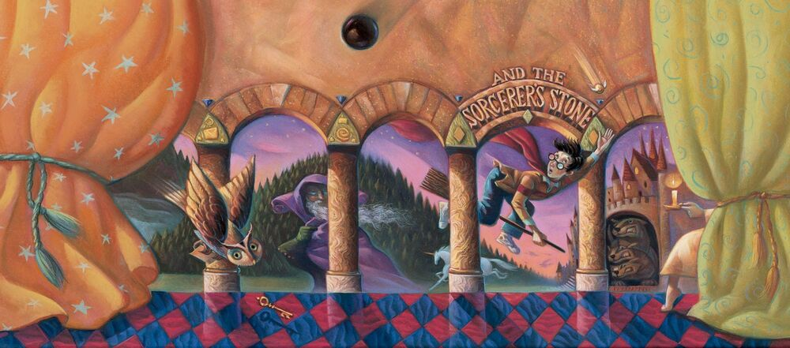
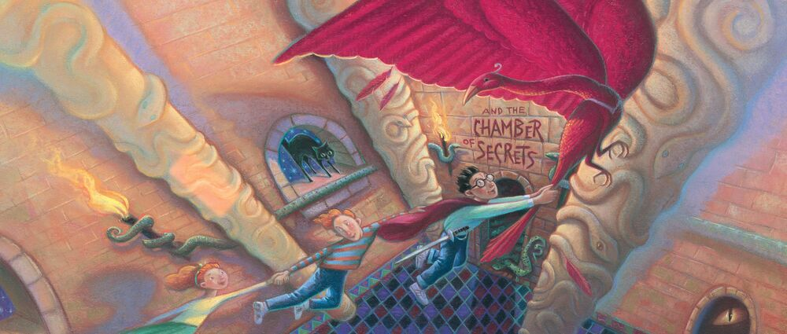
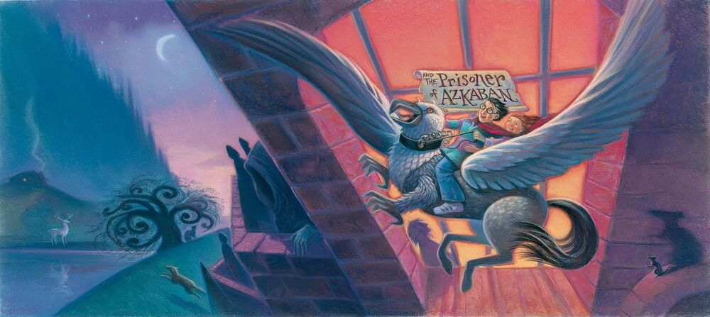

Harry Potter and the Philosopher's Stone is a fantasy novel written by British author J. K. Rowling. The first novel in the Harry Potter series and Rowling's debut novel, it follows Harry Potter, a young wizard who discovers his magical heritage on his eleventh birthday, when he receives a letter of acceptance to Hogwarts School of Witchcraft and Wizardry. Harry makes close friends and a few enemies during his first year at the school, and with the help of his friends, he faces an attempted comeback by the dark wizard Lord Voldemort, who killed Harry's parents, but failed to kill Harry when he was just 15 months old.
The book was first published in the United Kingdom on 26 June 1997 by Bloomsbury. It was published in the United States the following year by Scholastic Corporation under the title Harry Potter and the Sorcerer's Stone. It won most of the British book awards that were judged by children and other awards in the US. The book reached the top of the New York Times list of best-selling fiction in August 1999 and stayed near the top of that list for much of 1999 and 2000. It has been translated into at least 73 other languages, and has been made into a feature-length film of the same name, as have all six of its sequels. The novel has sold in excess of 120 million copies.

Harry Potter and the Chamber of Secrets is a fantasy novel written by British author J. K. Rowling and the second novel in the Harry Potter series. The plot follows Harry's second year at Hogwarts School of Witchcraft and Wizardry, during which a series of messages on the walls of the school's corridors warn that the "Chamber of Secrets" has been opened and that the "heir of Slytherin" would kill all pupils who do not come from all-magical families. These threats are found after attacks that leave residents of the school petrified. Throughout the year, Harry and his friends Ron and Hermione investigate the attacks.
The book was published in the United Kingdom on 2 July 1998 by Bloomsbury and later in the United States on 2 June 1999 by Scholastic Inc. Although Rowling says she found it difficult to finish the book, it won high praise and awards from critics, young readers, and the book industry, although some critics thought the story was perhaps too frightening for younger children. Much like with other novels in the series, Harry Potter and the Chamber of Secrets triggered religious debates; some religious authorities have condemned its use of magical themes, whereas others have praised its emphasis on self-sacrifice and the way one's character is the result of one's choices.

Harry Potter and the Prisoner of Azkaban is a fantasy novel written by British author J. K. Rowling and is the third in the Harry Potter series. The book follows Harry Potter, a young wizard, in his third year at Hogwarts School of Witchcraft and Wizardry. Along with friends Ronald Weasley and Hermione Granger, Harry investigates Sirius Black, an escaped prisoner from Azkaban, the wizard prison, believed to be one of Lord Voldemort's old allies.
The book was published in the United Kingdom on 8 July 1999 by Bloomsbury and in the United States on 8 September 1999 by Scholastic, Inc. Rowling found the book easy to write, finishing it just a year after she began writing it. The book sold 68,000 copies in just three days after its release in the United Kingdom and since has sold over three million in the country. The book won the 1999 Whitbread Children's Book Award, the Bram Stoker Award, and the 2000 Locus Award for Best Fantasy Novel and was short-listed for other awards, including the Hugo.